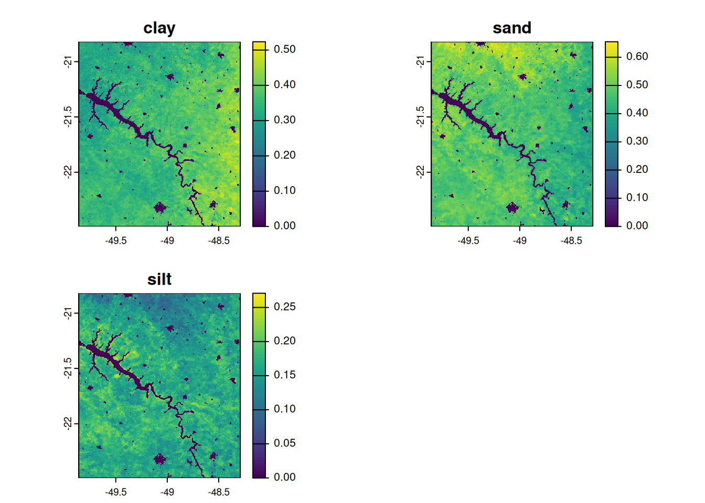
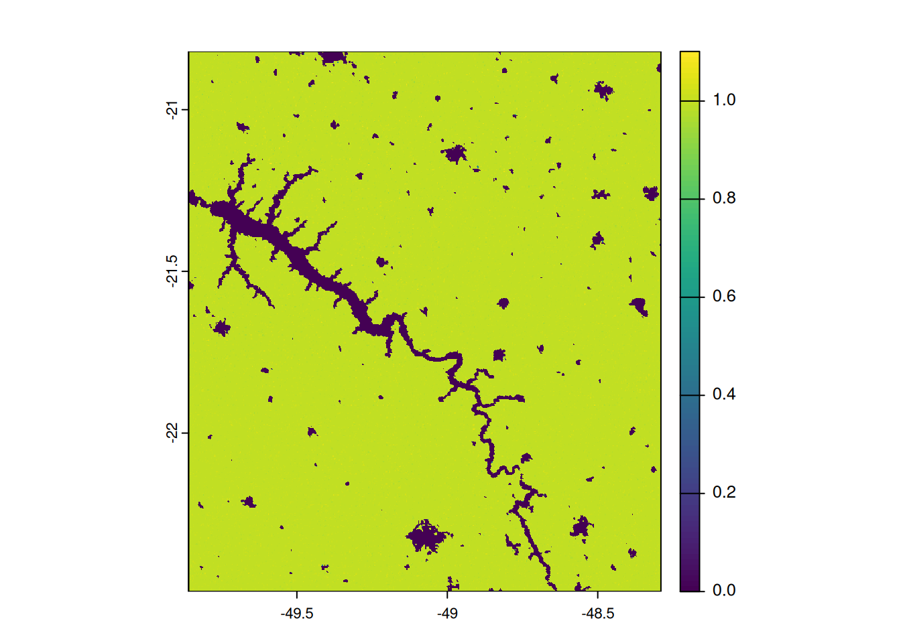
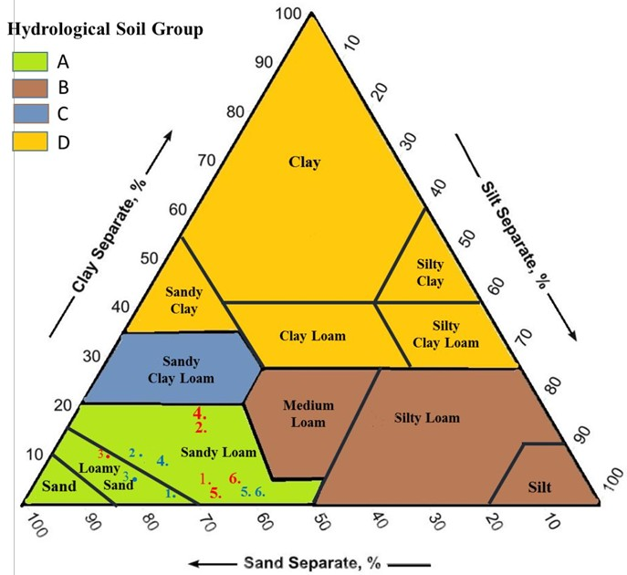
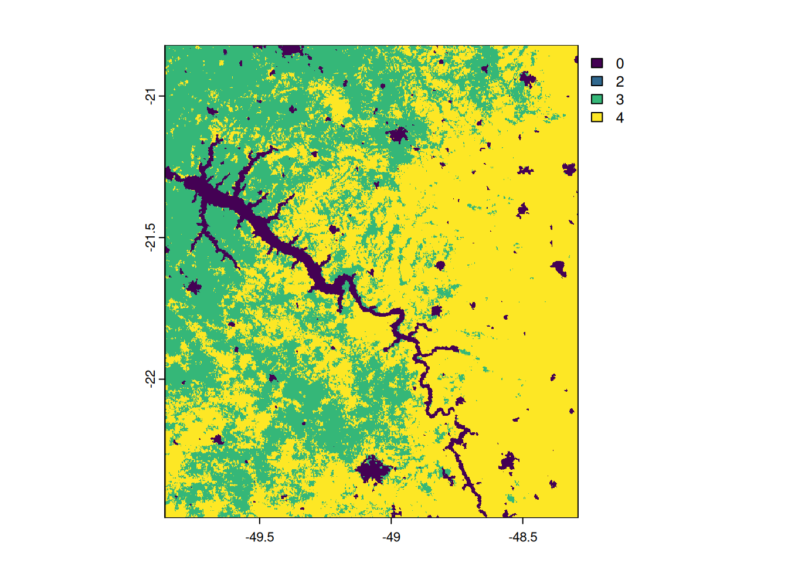
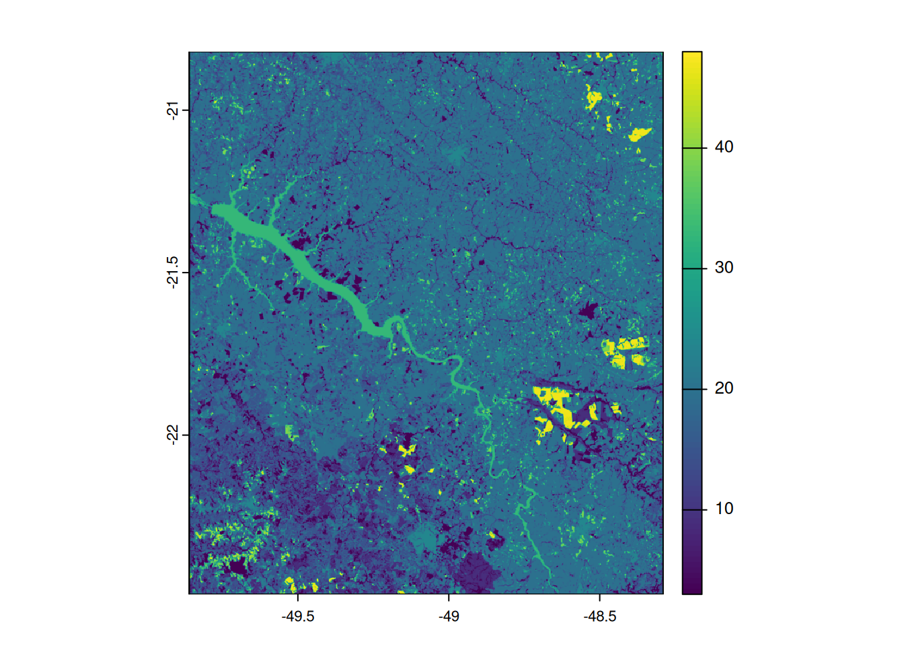
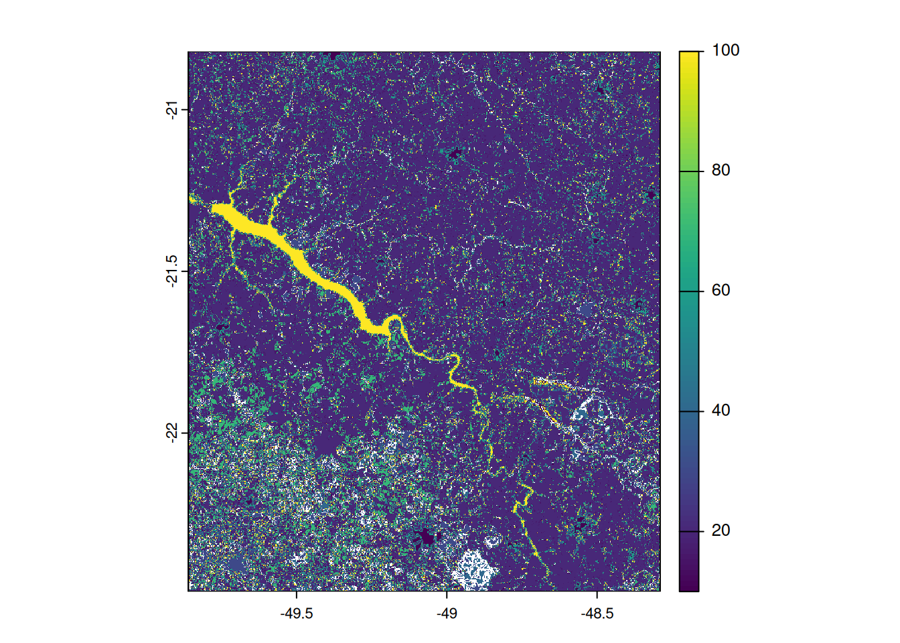
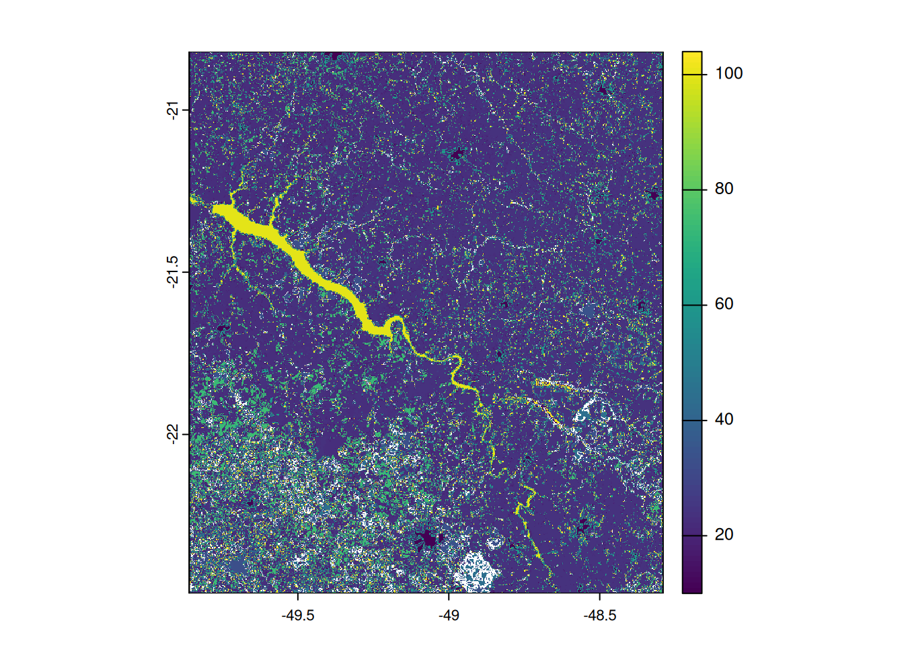
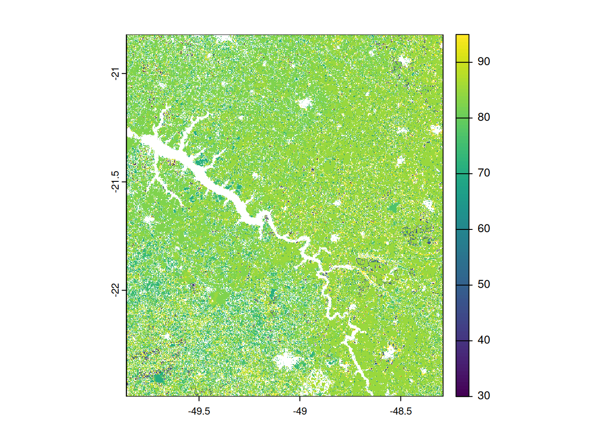

library(tidyverse)
library(glue)
library(terra)2 POTENTIAL AQUIFER RECHARGE THROUGH REMOTE SENSING
2.1 Abstract
2.2 Introduction
Water is fundamental to Earth’s systems, influencing climate, ecosystems, and human activities. The hydrological cycle describes the continuous movement of water through various reservoirs, including the atmosphere, soil, surface water, glaciers, and groundwater. Understanding this cycle is crucial for effective water resource management, particularly in the face of changing climatic conditions and increasing human demands. By quantifying water fluxes within different reservoirs, scientists can assess water availability, identify trends, and develop strategies for sustainable management (Santarosa et al., 2021).
Analyzing the movement of water through these reservoirs is made possible by understanding the mass balance equation for any system at various scales. The mass balance is derived from Reynolds’ transport theorem (Magulis, 2017). The first step in mass balance analysis is defining a control volume or area, followed by identifying the inflows and outflows (Hessels et al., 2022). Hydrological balance equations are essential tools for quantifying water exchanges in each system. These equations provide insights into the relationships between precipitation, evapotranspiration, runoff, and storage changes (Wang et al., 2014). Such variations highlight the need for flexible approaches in hydrological modeling to account for different climatic and geological settings (Lehmann et al., 2022). Data limitations, climatic characteristics, or the temporal scale of the analysis may lead to adaptations of the hydrological balance equation. A simplified form of the water balance equation for a watershed can be expressed as:
\[ \Delta S = P - ET - Q \tag{2.1}\]
where, \(\Delta S\) is the change in water storage, P is precipitation, ET is evapotranspiration and Q is surface runoff (Wang et al., 2014; Lehmann at al., 2022). In some cases, where horizontal movement (surface or subsurface runoff) of water is minimal, Q can be omitted (Wang et al., 2014). This type of adjustment in the hydrological balance equation can also be made for other variables to evaluate potential variability or hidden trends in one or more datasets (Luo et al., 2021; Lehmann et al., 2022). Another example of adapting the hydrological balance equation is to estimate groundwater recharge (Baalousha et al., 2018), at multi-annual scales, \(\Delta S\) can be disregarded (Crosbie et al., 2015).
\[ R = P - ET - Q - \Delta S \]
Hydrological balances support decision-making and directing water volumes toward necessary uses. The need for new tools to quantify water is increasingly evident, especially in the current context, where water management requires understanding the effects of extreme events caused by climate change and the transformations in hydrological processes driven by anthropogenic activities (Scanlon et al., 2023).
Obtaining high-quality spatiotemporal estimates of hydrological balance components is a challenge due to the lack of in situ measurements and the absence of policies maintaining adequate monitoring networks. In this context, the era of satellite remote sensing offers a promising solution for monitoring the hydrosphere. Due to dedicated satellite missions, it is possible to measure key variables that can be used to estimate the components of the hydrological balance (Lehmann et al., 2022). Advancements in remote sensing, hydrological modeling, and data assimilation techniques have improved the ability to estimate water balance components across various spatial and temporal scales (Hessels et al., 2022). However, uncertainties remain due to limitations in data availability, measurement techniques, and model assumptions (Crosbie et al., 2015).
As an example of hydrological applications based on remote sensing, Lehmann et al. (2022) conducted a global study evaluating the state-of-the-art methods and recent satellite data applied to hydrology, investigating the water balance in the world’s major basins. The authors found good performance of satellite data for estimating changes in water storage. However, they also noted that some satellite products show variations in performance depending on the region, highlighting the importance of carefully evaluating the data used in local studies.
Wang et al. (2014) evaluate the limitations and strengths of satellite data for hydrological balance at the semi-arid basin level across Australia. The authors conclude that the exclusive use of remote sensing data is sufficient to close the hydrological balance in large regions. Luo et al. (2021) analyze different combinations of satellite data to identify those with the lowest errors in estimating the hydrological balance in a basin in China. They highlight the most accurate data as the long-term global precipitation obtained through the combination of microwave and infrared satellite measurements from GPM IMERG (Integrated Multi-satellite Retrievals for Global Precipitation Measurement) (Huffman et al., 2019). Additionally, they mention evapotranspiration, water storage, surface runoff, and other data from large-scale terrestrial hydrological models generated by GLDAS (Global Land Data Assimilation System) (Rui & Beaudoing, 2015; Beaudoing & Rodell, 2016). This system integrates evapotranspiration data through an energy balance scheme (using methods such as Penman-Monteith) based on MODIS (Moderate Resolution Imaging Spectroradiometer) data (Running et al., 2019). Recently, measurements from GRACE (Gravity Recovery and Climate Experiment) have also been incorporated, allowing for the estimation of total water volume (Total Water Storage) (Li et al., 2019).
Given the critical role of groundwater in sustaining water resources, particularly in regions experiencing water scarcity, estimating groundwater recharge is a key aspect of hydrological studies. Recharge estimation methods, such as water balance equations, isotope analysis, and numerical modeling, provide valuable insights into groundwater sustainability (Santarosa et al., 2024). By refining these methods and incorporating advanced data sources, researchers and policymakers can improve water resource planning and develop strategies to mitigate the impacts of climate variability and human activities on aquifers.
The primary aim of this chapter is to demonstrate a recharge estimation based on the water budget method, utilizing an adaptation of Equation 2 for a multiannual scale, as proposed by Santarosa et al. (2024, 2021). The use of remote sensing, implemented in R language, was crucial for various processing steps involving a large dataset, aimed at analyzing the spatial and temporal behavior of aquifer potential recharge.
2.3 Dataset
The studies by Santarosa et al. (2024; 2021) utilize a consistent data processing methodology but differ in their hydrological and landscape datasets (Table 1). The 2021 study employed precipitation data from the Tropical Rainfall Measuring Mission (TRMM) and the Global Land Data Assimilation System (GLDAS v2.1), both with a daily temporal resolution. The spatial resolution was approximately 25 km for precipitation and evapotranspiration, complemented by 30 m land cover data and soil texture characteristics.
In contrast, the 2024 study refined the methodology by integrating precipitation data from the Integrated Multi-satellite Retrievals for Global Precipitation Measurement (IMERG GPM v6) at a ~10 km resolution, updated evapotranspiration data from GLDAS v2.2, annual land cover maps from MapBiomas (30 m, https://brasil.mapbiomas.org/), and soil texture information sourced from SoilGrids (250 m, https://soilgrids.org/).
The datasets from NASA (National Aeronautics and Space Administration) were downloaded from GESDISC (https://disc.gsfc.nasa.gov/). Detailed instructions for downloading these datasets can be found in the dataset download information. Additionally, Google Collaboratory can be used to download the dataset links (https://github.com/lvsantarosa/NASA-data-download), and it also supports accessing all mentioned datasets via the Google Earth Engine API.
Table 1. Datasets from Santarosa et al. (2021) and Santarosa et al. (2024)
| Characteristic | Santarosa et al. (2021) | Santarosa et al. (2024) |
| Objective | Water budget with precipitation, evapotranspiration, and runoff | Enhanced model with more recent data and improved scalability |
| Precipitation Data | TRMM 3B42 v7 | GPM IMERG v6 |
| Evapotranspiration | GLDAS v2.1 | GLDAS v2.2 |
| Surface Runoff | SCS-CN with fixed local land use and soil data | SCS-CN with annual data from MapBiomas Brazil and global soil data (SoilGrids) |
| Validation |
2.4 Methodology
The Soil Conservation Service (SCS) method is employed to convert rainfall into surface runoff by accounting for the characteristics of land cover and soil texture.
2.4.1 Determination of the Curve Number (CN)
The CN is derived by integrating soil hydrological characteristics with land use information. In the studies, high-resolution land cover data (e.g., MapBiomas with a 30 m resolution) and soil texture data (e.g., SoilGrids with a 250 m resolution) are combined to assign appropriate CN values for different areas.
2.4.2 Calculation of Maximum Potential Retention (S)
Once the CN is established, the potential maximum retention is calculated using the formula:
\[ S = \frac{{25400}}{{CN}}-254 \]
This equation converts the CN into a measure of the maximum amount of rainfall that can be retained by the soil.
2.4.3 Estimation of Initial Abstraction (Ia)
The initial abstraction, which includes losses from interception, early infiltration, and surface depression storage, is typically assumed to be 20% of S:
\[ I_{a} = 0.2 S \]
2.4.4 Runoff Calculation
For rainfall events where the daily precipitation P exceeds \(I_{a}\), the runoff is computed with the equation:
\[ R_{off} = \frac{(P-0.2S)^2}{P+0.8S} \]
This empirical formula estimates the portion of rainfall that becomes surface runoff after the initial abstraction is met.
By processing daily rainfall data through these steps, the SCS method generates spatially distributed runoff estimates that are integrated into the overall water balance analysis. This approach is particularly valuable when used in combination with remote sensing data, enabling researchers to capture the spatial variability of runoff across large areas and different land uses.
2.5 Processing
The first step is to load the essential packages: tidyverse, terra, and glue.
tidyverse: This package activates a suite of tools for data processing, such as date manipulation, filtering, editing, and selecting information.
terra: This package handles the geoprocessing of spatial data.
glue: This package is an alternative method for concatenating names in files.
The next step is to specify the working directory (setwd) and create a temporary directory (dir.create) to store processing information, which will be excluded in the final output. This practice helps to ensure that background processing does not consume a lot of space on the hard disk. It is strongly recommended for large spatial and temporal processing tasks.
my_path = \(x) glue::glue('data/potential-recharge/', x)
dir.create(path = my_path('temp'), showWarnings = FALSE)
terraOptions(tempdir = my_path('temp'))2.5.1 Curve Number Calculation
Applying the presented methodology, it is necessary to combine the Hydrologic Soil Group (HSG) information with Land Use Land Cover (LULC) data to determine the curve number (CN). As of the time of writing this chapter, new approaches are available and can be tested, including the possibility of using soil hydrological information for global purposes. For more information, visit hihydro soil.
In the original calculation presented by Santarosa et al. (2024), the textural information from SoilGrids was downloaded and processed to obtain the HSG information for the study area. The following steps will present the conceptualization of this process.
To download the SoilGrids information, see the accompanying Google Earth Engine script.
This process involves loading the information from SoilGrids and projecting it to the standard projection used.
soil = terra::rast(my_path('01_DADOS/00_SOIL/SOIL.tif'))
names(soil) = c('clay', 'sand', 'silt')
soil <- soil |> project('EPSG:4326', method = "mode")
plot(soil)
For verification of data, the sum of soil layers should to be equal to 1 for each pixel.
sum(soil) |> plot()

# Hydrologic Soil Group and Label used in the reclassification
# Hydrologic Soil Group
# A = 1
# B = 2
# C = 3
# D = 4
calculate_textural_triangle = function(clay, sand, silt) {
case_when(
clay <= 0.05 & sand <= 0.05 & silt <= 0.05 ~ 0
,clay >= 0.35 ~ 4
,clay >= 0.25 & sand <= 0.45 ~ 4
,clay >= 0.2 & silt <= 0.275 ~ 3
,silt <= 0.5 ~ 2
,clay <= 0.075 ~ 1
,sand <= 0.575 ~ 2
,TRUE ~ 1
)
}
soil_classified = terra::app(soil, fun = function(x) calculate_textural_triangle(clay = x[, 1], sand = x[,2], silt = x[,3]))
soil_classified |> plot()
2.5.2 Land Use and Land Cover (LULC)
Annual land cover data from MapBiomas, with a spatial resolution of 30 meters (Souza et al. 2020), were incorporated to capture the dynamic temporal behavior in runoff estimation. This LULC data can be utilized for annual analysis and is available for multiple countries across South America where MapBiomas information is accessible.
list <- list.files(my_path('01_DADOS/01_LULC/'), full.names = TRUE, pattern = '.tif$')
uses <- list()
for(i in 1:length(list)) {
uses[[i]] <- terra::rast(list[i]) |>
terra::resample(soil_classified, method = 'mode') |>
terra::as.int()
print(uses[[i]])
}class : SpatRaster
dimensions : 668, 628, 1 (nrow, ncol, nlyr)
resolution : 0.0025, 0.0025 (x, y)
extent : -49.86, -48.29, -22.49, -20.82 (xmin, xmax, ymin, ymax)
coord. ref. : lon/lat WGS 84 (EPSG:4326)
source(s) : memory
name : brasil_coverage_2023
min value : 3
max value : 48 mapbio_resample = terra::rast(uses)
mapbio_resample[mapbio_resample <= 0] = NA
terra::plot(mapbio_resample[[1]]) 
2.5.3 Reclassification of MAPBIOMAS According to SCS Method
For simplify the process, the LULC orinal data was reclassified to the SCS LULC classes the MapBimas values are agruped in 8 classes as presented in the Table 2.
Table 2. Classes of LULC used in SCS and the correspondent classes from MapBiomas
| SCS LULC | MapBiomas LULC |
| Urban (10) | 24 |
| Agriculture (20) | 14, 18, 19, 20, 21, 36, 39, 40, 41, 46, 47, 48, 62 |
| Forest (30) | 1, 3, 4, 5, 49 |
| Silviculture (40) | 9 |
| Grassland (50) | 12, 13, 32, 50 |
| Uncover (60) | 23, 25, 29, 30 |
| Pasture (70) | 15 |
| Water (100) | 10, 27, 31, 33 |
# Multiple replacements
class_map_scs <- rbind(c(24, 10),
c(14, 20), c(18, 20), c(19, 20), c(20, 20), c(21, 20), c(36, 20), c(39, 20), c(40, 20), c(41, 20), c(46, 20), c(47, 20), c(48, 20), c(62, 20),
c(1 , 30), c(3 , 30), c(4 , 30), c(5 , 30), c(49, 30),
c(9 , 40),
c(12, 50), c(13, 50), c(32, 50), c(50, 50),
c(23, 60), c(25, 60), c(29, 60), c(30, 60),
c(15, 70),
c(11, 100), c(27, 100), c(31, 100), c(33, 100))
rc_map_scs = classify(mapbio_resample, class_map_scs)
rc_map_scs[rc_map_scs < 10] = NA
terra::plot(rc_map_scs[[1]])
2.5.4 Curve Number (CN) Classification
By reclassifying the HSG and LULC (Land Use and Land Cover) data, the CN map can be produced. Table 3 presents the intersection of HSG and LULC data to derive the CN values used in the SCS method.
Table 3: Curve Number values based on the combination of LULC and HSG data.
| Land Use / Soil Type | A | B | C | D |
|---|---|---|---|---|
| Urban | 89 | 92 | 94 | 95 |
| Crops | 64 | 75 | 82 | 85 |
| Forest | 30 | 55 | 70 | 77 |
| Silviculture | 45 | 66 | 77 | 86 |
| Herbaceous | 48 | 62 | 71 | 85 |
| Bare Soil | 77 | 86 | 91 | 94 |
| Pasture | 39 | 61 | 74 | 80 |
| No Data | 0 | 0 | 0 | 0 |
class_cn <- rbind(c(11,89), c(12,92), c(13,94), c(14,95),
c(21,64), c(22,75), c(23,82), c(24,85),
c(31,30), c(32,55), c(33,70), c(34,77),
c(41,45), c(42,66), c(43,77), c(44,86),
c(51,48), c(52,62), c(53,71), c(54,85),
c(61,77), c(62,86), c(63,91), c(64,94),
c(71,39), c(72,61), c(73,74), c(74,80),
c(101,0), c(102,0), c(103,0), c(104,0),
c(10,0 ), c(20,0 ), c(30,0 ), c(40,0 ),
c(50,0 ), c(60,0 ), c(70,0 ), c(100,0))
# Reclassify
sum_soil_uses = soil_classified + rc_map_scs
plot(sum_soil_uses)
cn_final = classify(sum_soil_uses, class_cn)
# Nomes = seq(from = 2000, to = 2021)
# Use year as names for each CN in case of more than one year of analysis
Nomes = 2023
names(cn_final) = Nomes
cn_final[cn_final < 30] = NA
terra::plot(cn_final[[1]])
# Export Results
filename = my_path("02_RESULTADOS/CN_{Nomes}.tif")
cn_final |> writeRaster(filename = filename, overwrite = TRUE)2.5.5 Process the hydrological data
mask = terra::rast(my_path('02_RESULTADOS/CN_2023.tif')) |> terra::resample(soil) |> terra::trim()# Change the time according with the period
st <- as.Date('2023/01/01')
en <- as.Date('2023/12/31')
Date <- seq(from = st, to = en, by= 'day')
Date2 <- seq(from = st, to = en, by= 'month')
Year <- seq(from = 2023, to = 2023)2.5.6 STEP 1-A Organize the daily data set
rain_day_lst = list.files(path = my_path('01_DADOS/02_PRECIPITATION/'), pattern = '.nc4', full.names = TRUE)
for(i in 1:length(rain_day_lst)) {
rain1 =
terra::rast(rain_day_lst[i]) |>
terra::project('EPSG:4326') |>
terra::t() |>
terra::flip(direction = 'horizontal') |>
terra::flip(direction = 'vertical') |>
terra::resample(mask) |>
terra::mask(mask)
file_rf1 = my_path('temp/Rainfall_GPM_day_ret_{Date[i]}.tif')
terra::writeRaster(rain1, filename = file_rf1 , overwrite = TRUE)
}2.5.7 STEP 1-B Convert daily rainfall in monthly
rain_day_lst_res = list.files(path = my_path('temp/'), pattern = 'GPM_day_ret_.*\\.tif$', full.names = TRUE)
table_day_rain <- as_tibble(data.frame(Date, rain_day_lst_res)) |>
mutate(Year = lubridate::year(Date))
table_date <- as_tibble(data.frame(Date2))|>
mutate(Year = lubridate::year(Date2))
for(i in 1:length(Year)) {
Y <- Year[i]
sel_rn1 <- table_day_rain |> filter(Year == Y)
rain = terra::rast(sel_rn1$rain_day_lst_res)
d <- time(rain)
m <- as.numeric(format(d, "%m"))
y <- as.numeric(format(d, "%Y"))
ym <- paste0(y, m)
rain_m <- tapp(rain, ym, sum)
sel_dt <- table_date |> filter(Year == Y)
names(rain_m) = sel_dt$Date2
file_rf = my_path('temp/Rainfall_GPM_month_{sel_dt$Date2}.tif')
terra::writeRaster(rain_m, filename = file_rf , overwrite = TRUE)
#print(sel_dt$Date2)
}2.5.8 STEP 2 Resample Curve Number
cn_lst1 = list.files(path = my_path('02_RESULTADOS/'), pattern = 'CN.*\\.tif$', full.names = TRUE)
cn1 <-
terra::rast(cn_lst1) |>
terra::resample(mask) |>
terra::mask(mask) |>
terra::as.int() |>
terra::trim()
file_cn = my_path('temp/CN_res_{Year}.tif')
terra::writeRaster(cn1, filename = file_cn , overwrite = TRUE)2.5.9 STEP 3 Runoff calculation
rain_day_lst_res = list.files(path = 'temp', pattern = 'GPM_day_ret_.*\\.tif$', full.names = TRUE)
cn_lst = list.files(path = my_path('temp'), pattern = 'CN_res.*\\.tif$', full.names = TRUE)
## arrumar aqui!!
table_day_rain <-
tibble(Year = Date[seq_along(rain_day_lst_res)], X = rain_day_lst_res)
table_merge <- as_tibble(data.frame(Year, cn_lst)) |> merge(table_day_rain, by = 'Year')
#If you need stat again or use another interval can change this object
#Year <- seq(from = 2017, to = 2021)
for(i in 1:length(Date)) {
cn_lst <- table_merge$cn_lst
cn <- terra::rast(cn_lst[i])
rain_lst <- table_merge$rain_day_lst_res
rainfall <- terra::rast(rain_lst[i]) |> terra::resample(cn)
s = (25400 / cn) - 254
ia = 0.2*s
runoff <- ((rainfall - ia)^2)/(rainfall - ia + s)
runoff[ia > rainfall] = 0
name_rf <- Date
names(runoff[[1]]) <- name_rf[i]
file_rf = glue('temp/Runoff_{name_rf[i]}.tif')
terra::writeRaster(runoff[[1]], filename = file_rf , overwrite = TRUE)
#print(runoff)
}#Runoff from day to month
roff_day_lst_res = list.files(path = 'temp/', pattern = 'Runoff.*\\.tif$', full.names = TRUE)
roff = terra::rast(roff_day_lst_res)
d <- as.Date(names(roff))
m <- as.numeric(format(d, "%m"))
y <- as.numeric(format(d, "%Y"))
ym <- paste0(y, m)
roff_m <- tapp(roff, ym, sum)
names(roff_m) = Date2
file_rf = glue('temp/Runoff_month_{Date2}.tif')
terra::writeRaster(roff_m, filename = file_rf , overwrite = TRUE)
gc()2.5.10 STEP 4 Monthly recharge calculation
et_m_lst = list.files(path = '01_DADOS/03_EVAPOTRANSPIRATION/', pattern = '.SUB', full.names = TRUE)
rain_m_lst = list.files(path = 'temp/', pattern = 'GPM_month.*\\.tif$', full.names = TRUE)
roff_m_lst = list.files(path = 'temp/', pattern = 'Runoff_month_.*\\.tif$', full.names = TRUE)
Rff <- list()
Etp <- list()
Prc <- list()
# Import results and resample all layer
for(i in 1:length(Date2)) {
Rff[[i]] <- terra::rast(roff_m_lst[i]) |>
terra::resample(mask) |> terra::mask(mask)
print(names(Rff[[i]]))
Etp[[i]] <- terra::rast(et_m_lst[i]) |>
terra::resample(mask) |> terra::mask(mask)
names(Etp[[i]]) <-Date2[i]
print(names(Etp[[i]]))
Prc[[i]] <- terra::rast(rain_m_lst[i]) |>
terra::resample(mask) |> terra::mask(mask)
#print(names(Prc[[i]]))
}# Recharge calculation
for(i in 1:length(Date2)) {
PRC <- terra::rast(Prc[i])
ETP <- terra::rast(Etp[i])
ETP <- ETP*(60*60*24*30)
RFF <- terra::rast(Rff[i])
Recharge = PRC - (ETP + RFF)
Recharge[Recharge < 0] = 0
#print(Recharge)
file_rc = glue('temp/Recharge_{Date2[i]}.tif')
terra::writeRaster(Recharge, filename = file_rc , overwrite = TRUE)
#print('Save!')
}
gc()# From month to year
rec_lst_res = list.files(path = 'temp/', pattern = 'Recharge_.*\\.tif$', full.names = TRUE)
rec = terra::rast(rec_lst_res)
d <- as.Date(names(rec))
y <- as.numeric(format(d, "%Y"))
rec_y <- tapp(rec, y, sum)
names(rec_y) = Year
file_rc = glue('02_RESULTADOS/Recharge_year_{Year}.tif')
terra::writeRaster(rec_y, filename = file_rc , overwrite = TRUE)
plot(rec_y)2.5.11 CLEAN TEMP FILES
unlink(x = list.files('temp', full.names = TRUE))